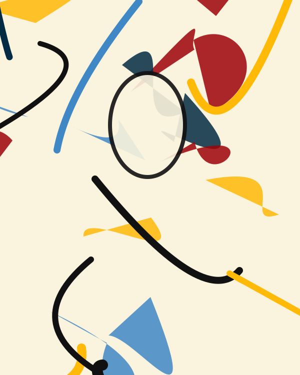
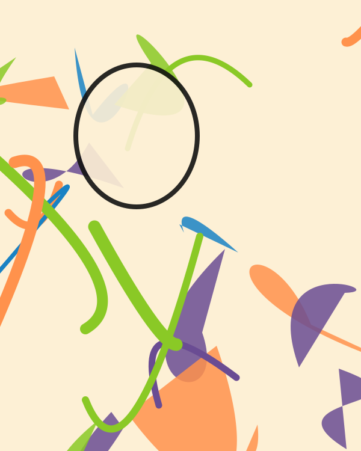
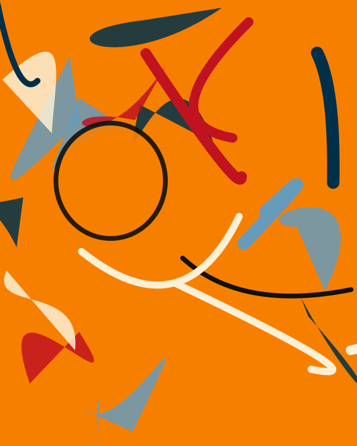
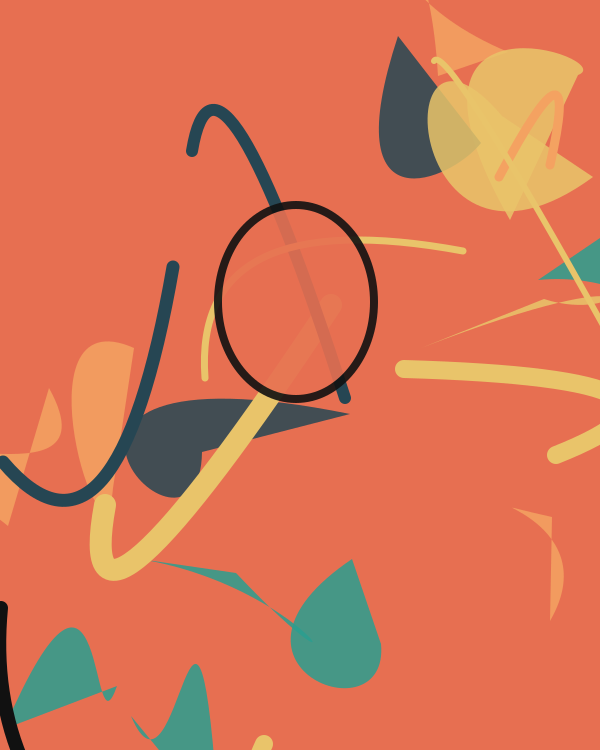
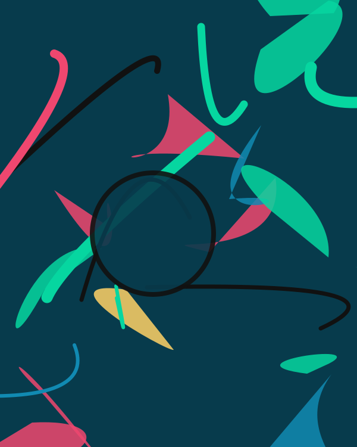
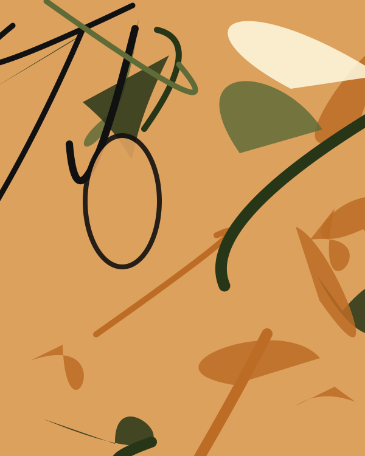

Les œuvres
Une sélection d'œuvres exposées et à vendre. Filtrez par artiste ou par technique.

Œuvre du mois
Terre et olive
Une toile expressive où l'ocre et le vert olive se répondent. Contactez la galerie pour en savoir plus.
Demander des informations






Aucune œuvre ne correspond à cette sélection.